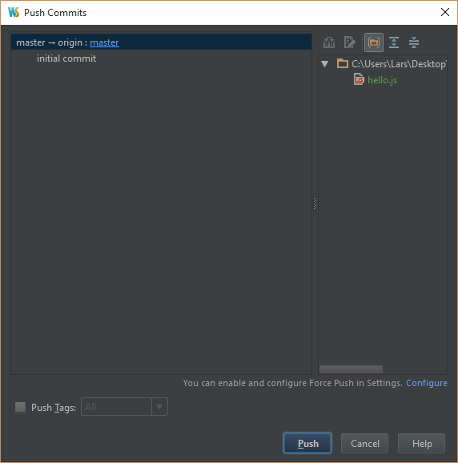
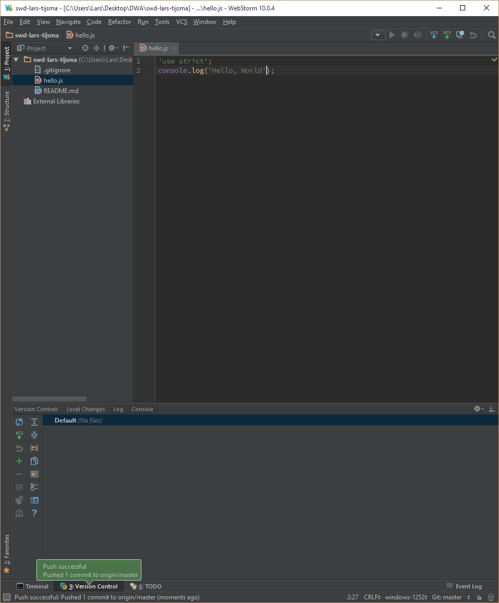
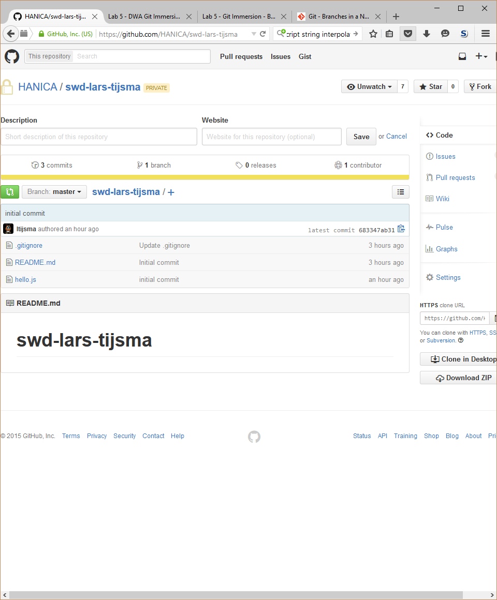

lab 5 Pushing
Goals
- Learn how to push local changes to the remote repo
Push changes to your remote repo. 01
To update the remote repo with your local changes, you'll need to execute a push. This will apply all local commits since the last push to the remote repo, so you can apply multiple commits with one push.
Execute:
In the main menu select VCS > Git > Push

Click push
Output:
WebStorm should tell you:
Check your remote repo. 02
Check that your script is pushed to github
Output:
Check your commit history. 02
And check that the all branches point to the same commit